I grew up in the small town of Jiroft, Iran and currently live in Vancouver, Canada. As a well trained physicist, I've learned how to approach and solve complex problems with the right mindset. Currently, I'm a senior Data Scientist at
RACE21, building state of the art safety and optimization mining solutions.
In the recent past, I have collaborated with the ATLAS experiment at CERN, an experiment of a kind, designed to explore the secrets of the universe. At ATLAS, collaborating with an amazing international research team I contributed just a tiny bit to everyone's better understanding of the basic constituents of the matter through high energy physics research, simulating the very very early universe.
Outside work, I'm always very fascinated by Arts and very much enjoy engaging in this media whenever there's a chance. In particular, I paly the piano and enjoy night sky and wildlife photography very much.
In my current role at RACE21, I work at full capacity in building state of the art mining optimization and safety solutions. In particular, in collaboration with a large team we leverage Machine Learning, Deep Learning techniques alongside Mixed Integer Programming to tackle very complex optimization problems in the load and haul analytics domain in the miming area.
In the recent past I have had the privilege to collaborate with the world leader in experimental particle physics research, CERN.
My research has been focused on one simple question, what is mass?!
In order to find a potential answer to this question, working with a large team of international researchers we spent years digging deep into Petabytes of data collected by the ATLAS experiment at CERN. By leveraging advanced Machine Learning techniques, big data analytics and cloud computing services our team was able to get closer to answer this fundamental question and publish top tier papers, well received globally.
In this Specialization, I learned how to build and train neural network architectures such as Convolutional Neural Networks, Recurrent Neural Networks, LSTMs, Transformers, and how to make them better with strategies such as Dropout, BatchNorm, Xavier/He initialization, and more. Beside mastering the theoretical concepts and I learned how to build industry applications using Python and TensorFlow to tackle real-world cases such as speech recognition, music synthesis, chatbots, machine translation, natural language processing, etc.
Through this program I learned how to leverage my existing knowledge of Python and machine learning to manage data ingestion and preparation, model training and deployment, and machine learning solution monitoring in Microsoft Azure.
In the MLOps Specialization I learned how to conceptualize, build, and maintain integrated systems that continuously operate in production. Specifically, I learned how to use well-established tools and methodologies for production systems at the minimum cost while producing the maximum performance.
Scaled Agile is the certifying body of the Scaled Agile Framework (SAFe®). SAFe® training, which is an agile framework for development teams, is developed on three pillars: Team, Program, and Portfolio. It amalgamates a Lean mindset and SAFe® to form a highly effective methodology that is adaptable to any organization, regardless of complexity, structural set-up, or size.
Research
PhD Thesis Highlights
My PhD study has been focused on one simple question, what is mass!?
The Standard Model of particle physics describes the fundamental particles and their interactions, it has withstood numerous tests over the past few decades, however, it has many open questions, such as the origin of mass, the source of dark energy and dark matter in our universe and many more ...
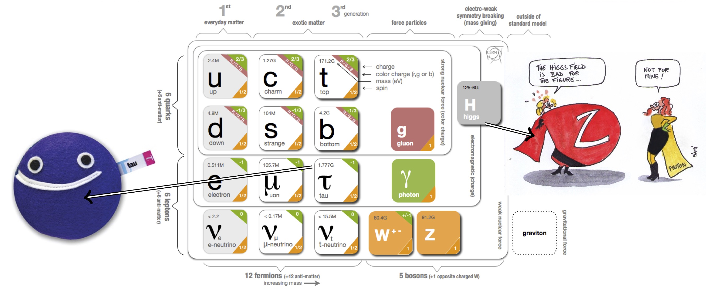
My research has been mainly focused on two particles: 1) Higgs boson, it is the latest elementary particle discovered at LHC in 2012, all the particles of the Standard Model are believed to gain their mass through interactions with the Higgs field. 2) tau lepton, the heavy cousin of electron which is highly unstable (decay time $\approx 2.9\times10^{-13}s$). There are several compelling theories predicting more particles with characteristics same as the Higgs Boson. I have been search for one such particle through Petabytes of proton-proton collision data recorded by the ATLAS detector at CERN during 2015-2018.
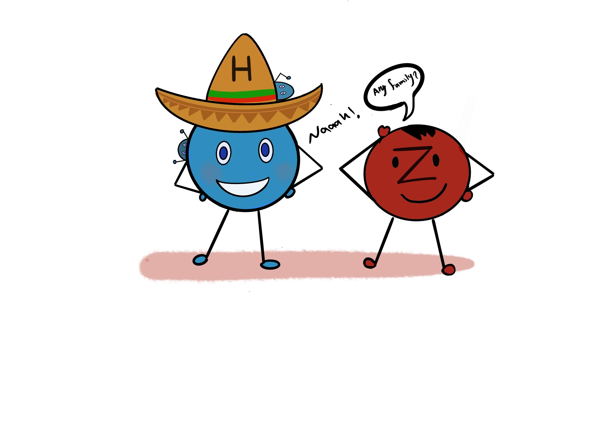
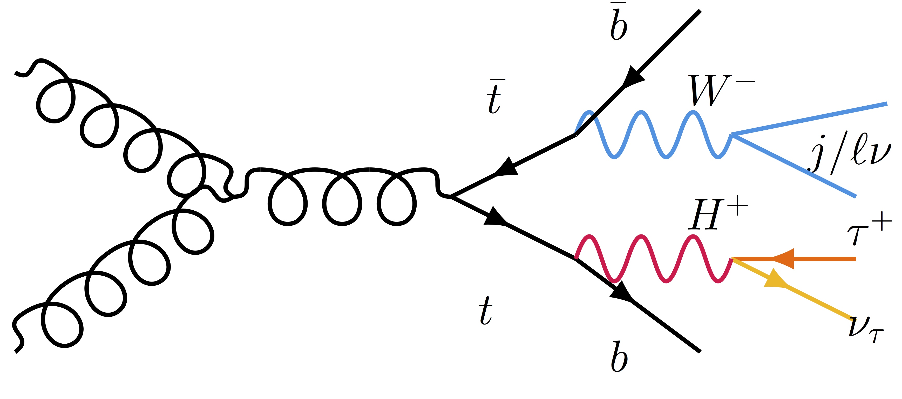
Schematic view of proton-proton collision, production of a Higgs boson and its associated decay
The Large Hadron Collider, the world’s most powerful particle accelerator, is built to deepen our understanding of the building blocks of the universe and their underlying interactions. The $27km$ ring of superconducting magnets and accelerating components boost protons up to $0.999999991$ of the speed of light. At LHC proton beams are collided at a rate of roughly one billion per second. Advance particle detectors, like ATLAS record data from the myriad of particles produced from these collisions, amounting to about 100 Petabytes per year. The data and compute is then distributed over The Worldwide LHC Computing Grid (WLCG), an international grid-based computer network infrastructure incorporating over 170 computing centers around the globe.
Analysis Chain
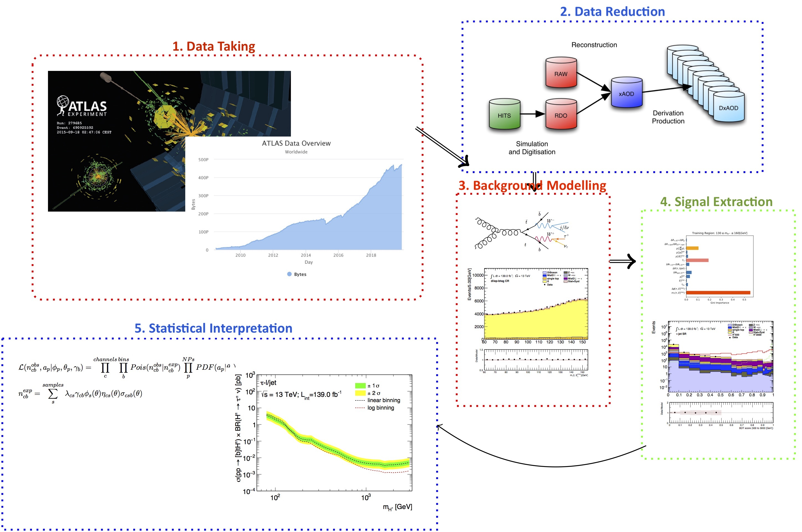
Proton-proton collision data is recorded by the ATLAS detector
Baseline physics objects (electrons, photons, ...) are reconstructed and reduced data formats are made available for the next steps of the analysis
Background processes which have the same signature as the process of interest (signal) are modelled, since they usually are orders of magnitude larger than signal their precise modelling is crucial
Classifiers are developed to efficiently classify signal events from background ones
Statistical interpretation of results is preformed to quantify any excess of events from the background processes in the light of he signal process
Machine Learning
Di-Tau Mass Reconstruction
Mass estimators are good tools in search for rare particle physics processes. In particular, as one of my early PhD projects, I have been developing Machine Learning (ML) techniques to estimate mass for a system of two tau leptons. Tau lepton has a very short life time and some of its decay products (neutrinos) can not be measured due to their extremely weak interactions with ordinary matter. The challenge is to estimate the mass of the system using only the visible decay products in a detector. The goal is to find $m_{\tau\tau} =? f(p^{\mu}_{\tau^{vis}_1}, p^{\mu}_{\tau^{vis}_2})$
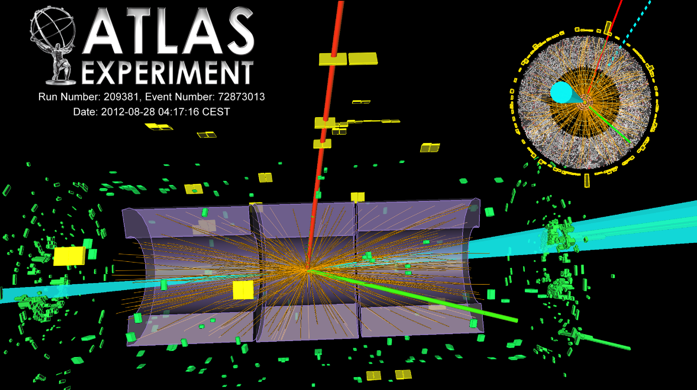
This regression problem is solved through ML based methods such as Boosted Regression Trees (BRTs) and Neural Networks (NN). ditau-mass-calculators software built on top of ROOT and scikit-learn is written for this purpose.
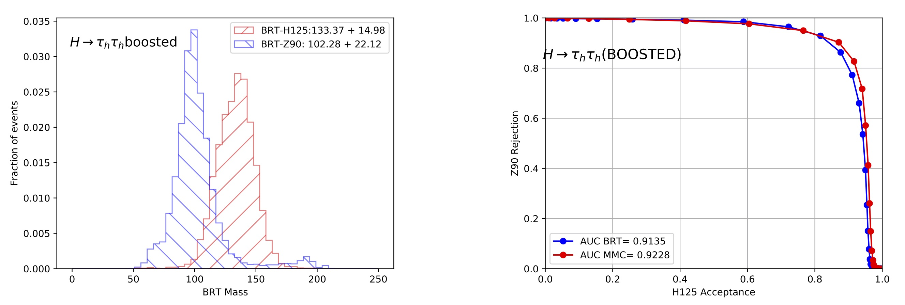
While, the ML-based di-tau mass estimators are very competitive to other (classic) estimators performance-wise, the great advantage they are $\approx 3000$ times faster.
Search for Charged Higgs Boson
One of the primary challenges in search for rare particle physics processes is classifying proton-proton collision events to whether they are coming from background processes (not of main interest, but, very large) or from signal process which is of the main interest. In order to tackle this challenge in search for charged Higgs Bosons, using high level information from the detector (energy deposits, trajectory information, etc) ML-based methods are developed. A software on the top of ROOT and scikit-learn called hpana, is built. With meticulous attention to features selection, optimization and validation, Gradient Boosting Decision Trees (GBDTs) showed high efficiency in signal and background separation.
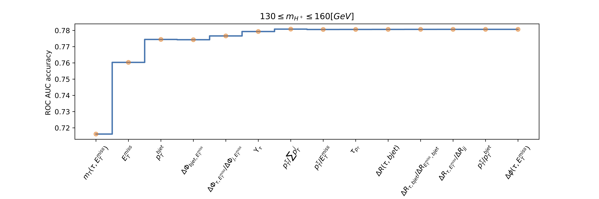
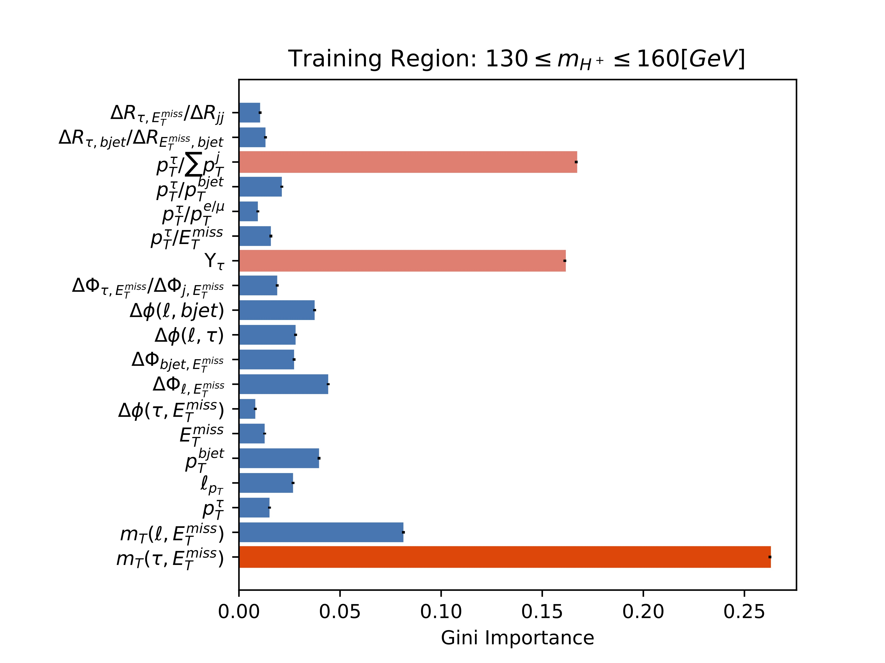
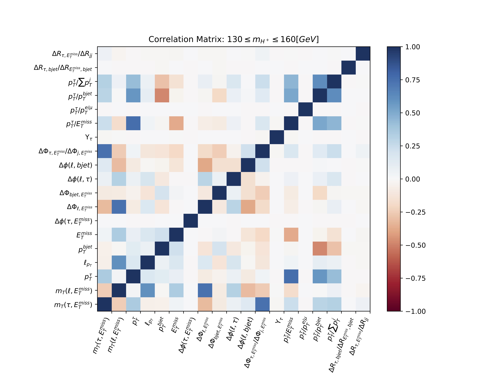
Input features ranking and correlation
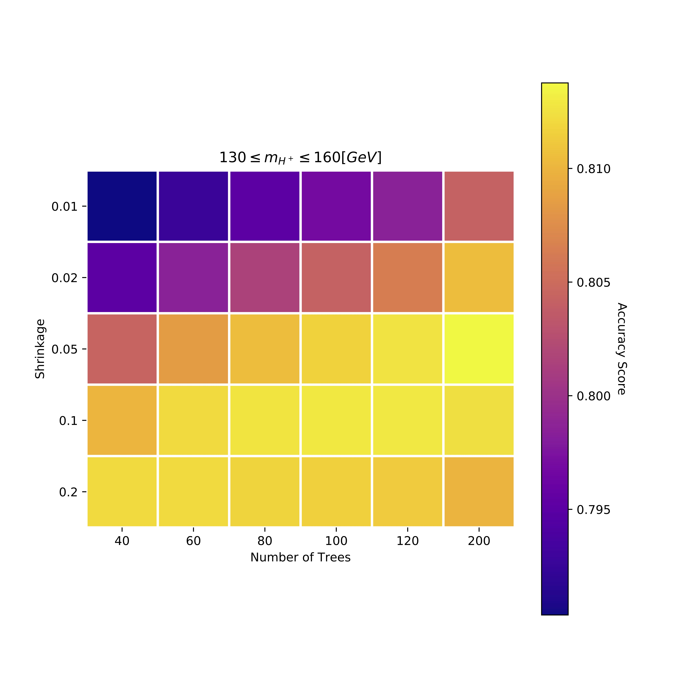
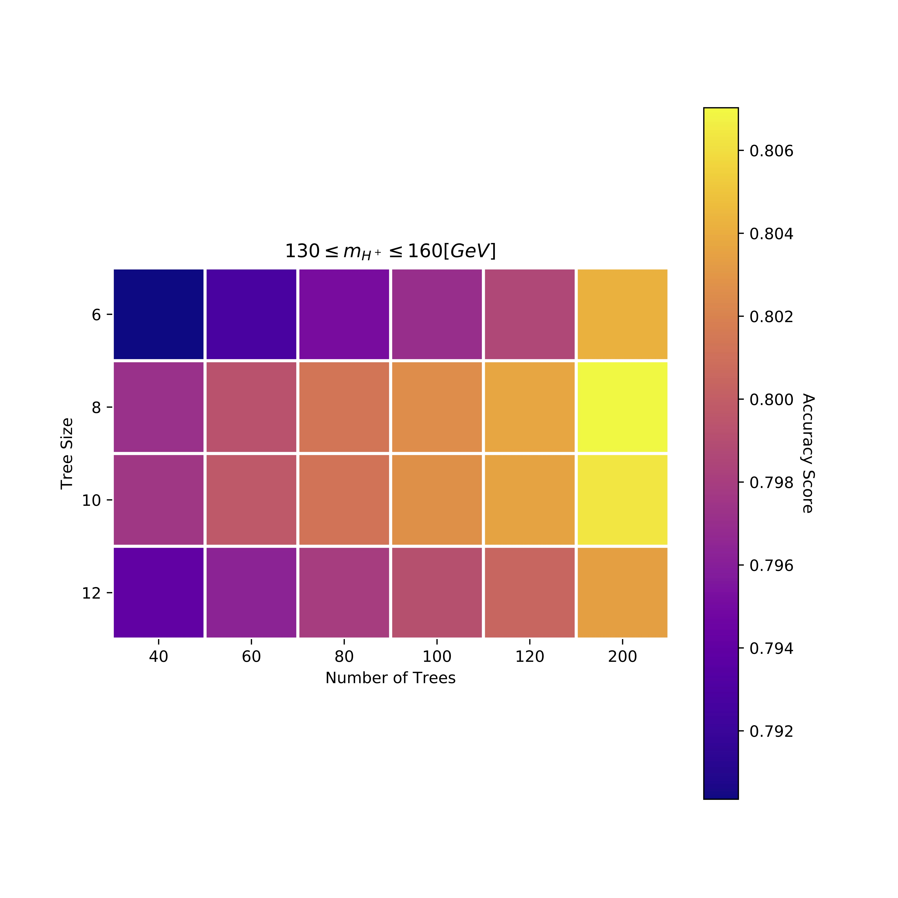
Optimization of the hyper-parameters of GBDTs
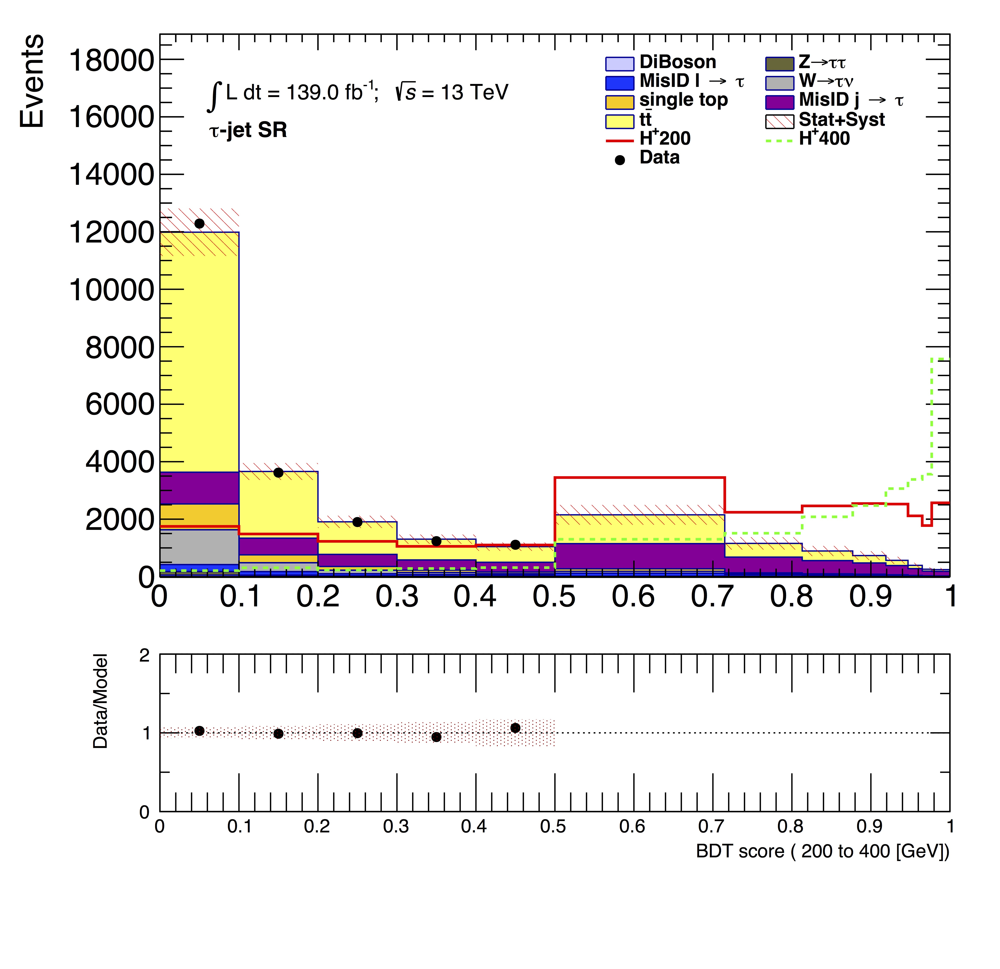
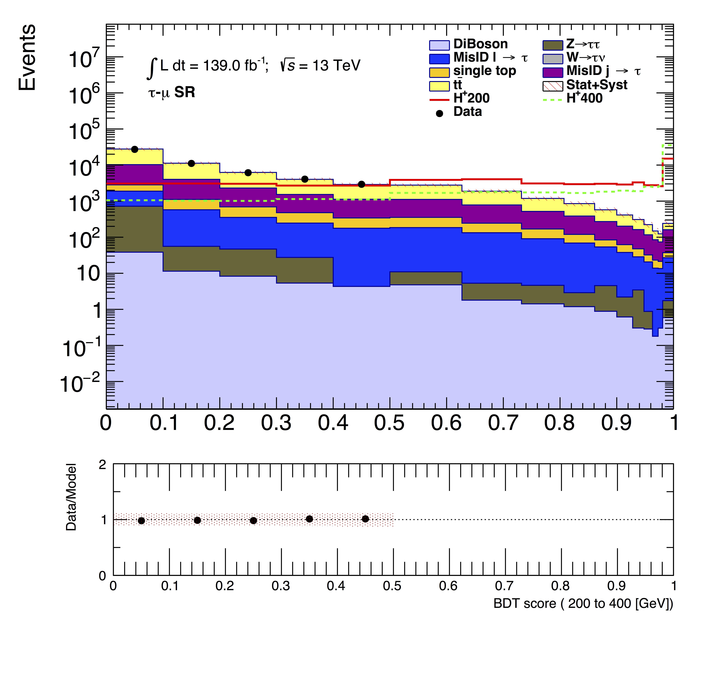
Classification score distribution for various processes
Tau Identification with Recurrent Neural Networks
Tau-lepton is one of the most elusive particles of the Standard Model, its reconstruction and identification is particularly difficult due to its very short decay time and invisible decay products (neutrinos). The decay signature (energy deposit, trajectory) of tau leptons is very similar to some other particles produced abundantly from proton-proton collisions at ATLAS. A rigorous identification algorithm is crucial for all the searches involving this particle. For this purpose BDT and Recurrent Neural Network (RNN)-based algorithms are developed to address challenges associated with tau identification. Reconstructed objects in the ATLAS detector can be viewed as an ordered sequence after imposing a physically-motivated ordering (e.g. ordering by object energy) and are thus suited for the use in recurrent neural networks. The RNN uses a combination of low-level input variables for individual tracks and clusters that are
associated to the tau candidate as well as several high-level observables observables calculated from track and calorimeter quantities.
Architecture of a recently developed RNN is shown here:
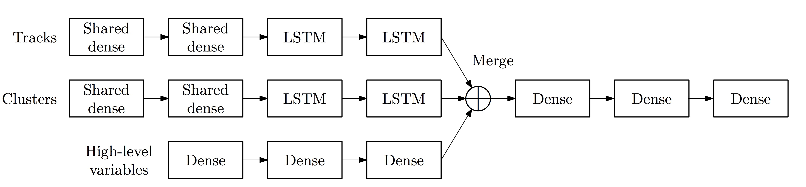
To facilitate the use of associated charged particle tracks, clusters in the calorimeter and high-level variables, the network is split into three dedicated branches for each type of input. The high-level features associated to each tau lepton candidate are processed through a sequence of three fully connected layers with 128, 128 and 16 units.
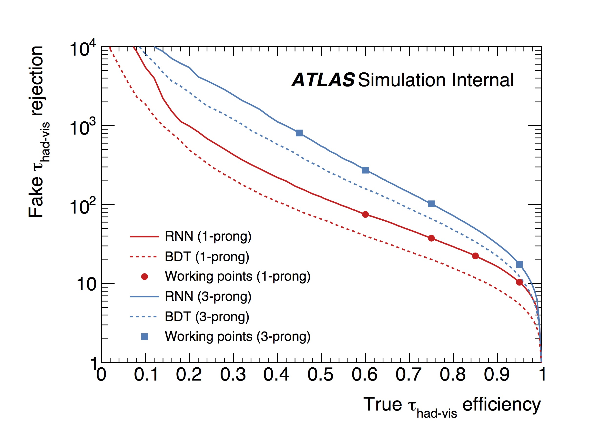
Big Data & Cloud Computing
ATLAS experiment's current Event Data Model for analysis, called the xAOD, is based on the idea of the separation
of the object data from the objects themselves (the ‘auxiliary store’). Rather than being stored
as member variables of the analysis classes, all object data are stored separately, as vectors
of simple values. Thus, the data are stored in a ‘structure of arrays’ format, while the user
still can access it as an ‘array of structures’.
The resulting data structures can be written to
ROOT files with data properties represented as simple
ROOT TTree branches .
Worldwide LHC Computing Grid (WLCG) provides the resources to store, distribute, and process the LHC data, over more than 170 data centers in 36 countries around the globe. Rucio , an open-source software developed by the ATALS collaboration is used to organize, manage, and access the data across heterogeneous data centers at widely distributed locations.
Production ANd Distributed Analysis (PanDA)
The PanDA system has been developed by ATLAS to meet the requirements for a data-driven workload management system for production and distributed analysis processing capable of operating at LHC data processing scale.
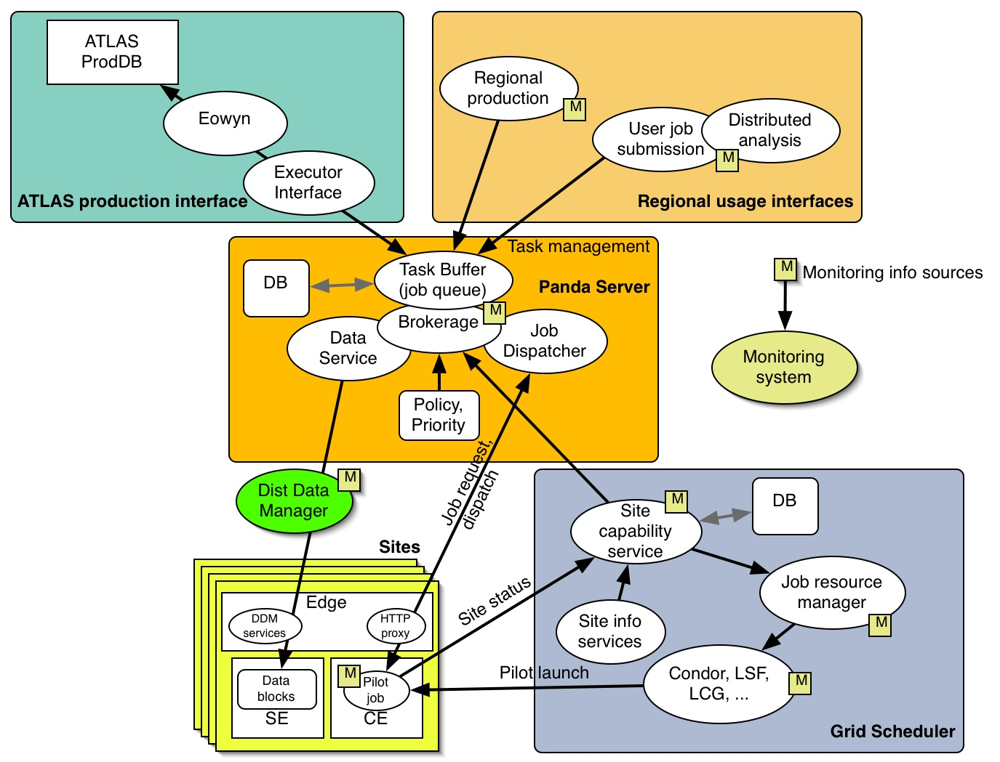
Quantum Computing
Quantum computers leverage quantum mechanical phenomena to manipulate information. To do this, they rely on quantum bits, or qubits. qubits Since qubits are quantum systems, we can capitalize on the phenomena of "superposition" and "entanglement."
Superposition: is naively the ability of a quantum system to be in multiple states at the same time
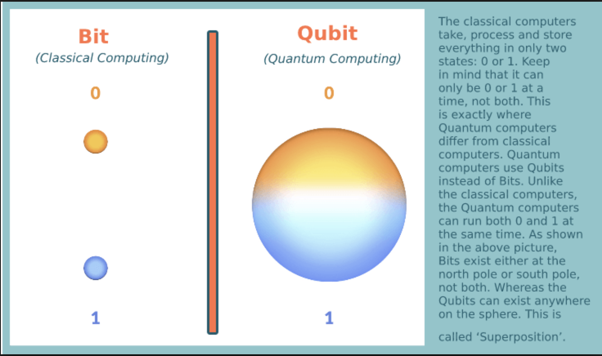
Entanglement: two or more quantum systems can be inextricably linked in perfect unison, even if separated by great distances.
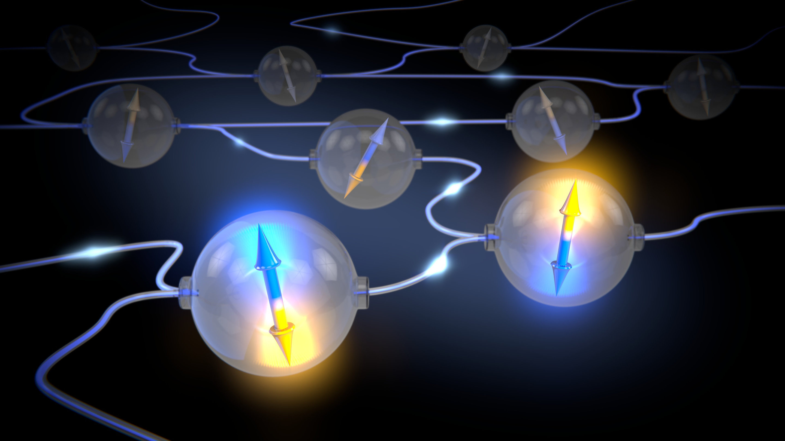
An artist impression of a quantum network based on Nitrogen Vacancies qubits in diamond. Credit: Scixel/TU Delft
To see how a simple addition can be done on a quantum computer see my recent presentation on this, also for the code please see this git repository.
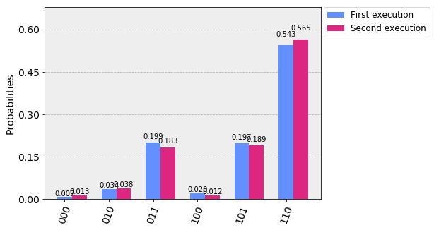
Left) Quantum circuit implementation of Ripple Adder; Right) Probability distribution of the outcome state
My research in Quantum Computing is around developing quantum computing-based techniques for particles track reconstruction at the ATLAS experiment and Quantum Machine Learning. The ATLAS detectors is expected to be delivered a significantly higher proton-proton collision rate in a few years. This will make particles' track reconstruction using huge numbers of hits in different cells of the detector even more complicated and can hit serious computational limitations. Quantum computing speed up is one of the areas that ATLAS is seeking a solution from and I'm interested in. On the rather new Quantum Machine Learning frontier, I'm excited about implementation and interpretation of algorithms that can be used on real life problems.
Technical and Software Skills
Programming Languages: Python, C/C++, SQL
Deep Learning Frameworks: TensorFlow, Keras, PyTorch